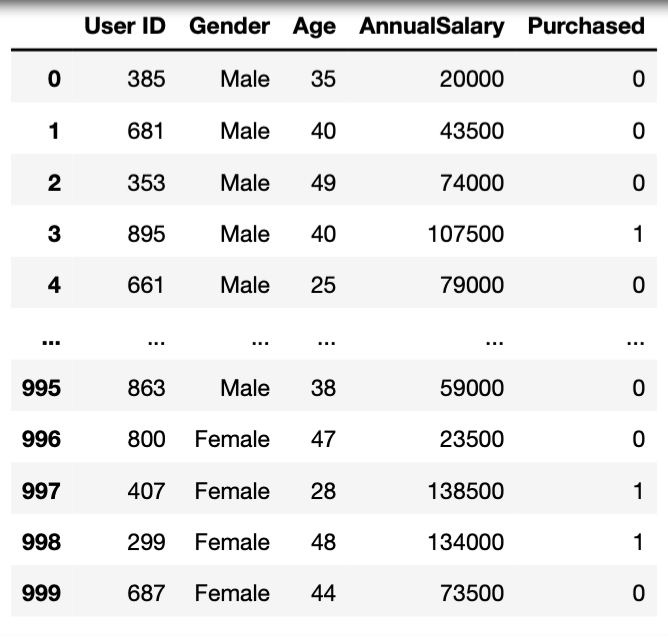
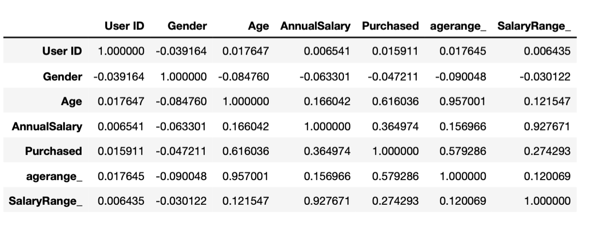
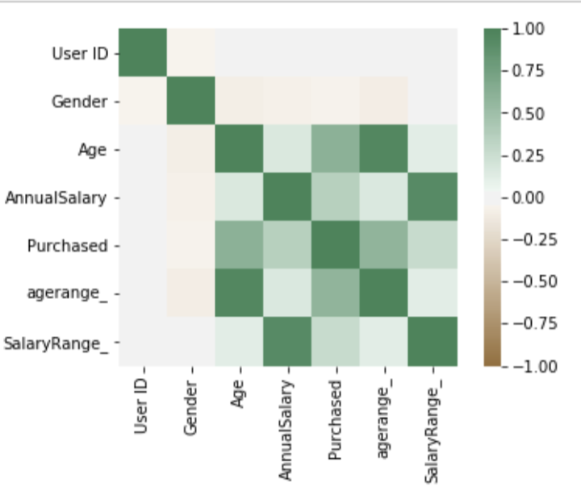
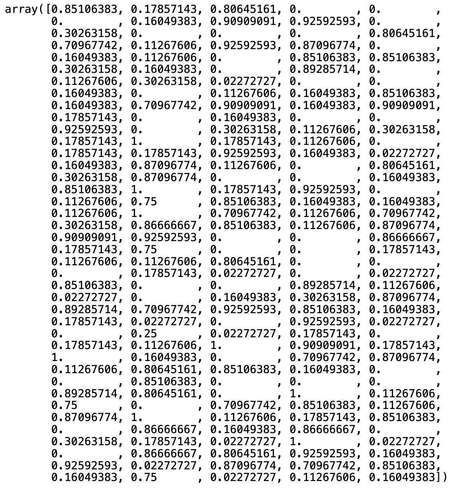
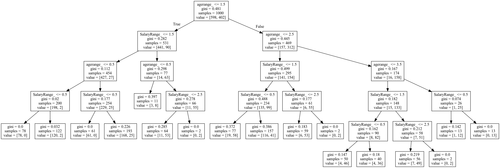

Car Purchase Prediction
Analysis
For Code
This project is for the purpose of gaining more practice using python, predictions, and machine learning. This dataset is about car purchases, and I was given the following information, User ID, Gender, Age, Annual Salary, and whether they purchased a vehicle or not. Firstly, I wanted to explore the data to get a better understanding with the variable to make an assumption.
Theory
Based off the information that I have observed, I believe the purchases will be influenced by key factors such as Age and Salary. With I continued to manipulate the data by cleaning it up.
- Converted the values from string to integers (to use values in decision tree)
- Remove any duplicates (no need for redundant values)/li>
- Remove irrelevant columns


Explanation will go from left to right
a) This graph represents the males and females that either made or did not make a purchase of a vehicle. According to this bar graph, women and men who have not purchased are relatively equal, thus giving the projection that the gender of the customers might not matter as much as I thought. On the contrary the graph shows that women made more purchases than men (again this does not mean much as the gender is an irrelevant variable).
b) This graph is a representation of the amount of people who have purchased (I removed the non-buyers as I don’t believe they are necessary to have in the bar chart) and the salary that they currently have. In relation to this model, there are buyers that make $100K-149K in a calendar year and that they could be more likely to purchase than those who make 10K-99K and 150K-199K
c) This graph is displaying the age range of the customers who have purchased a car and at first glance it seems as though those who are between the ages of 30-59 are more likely to by a vehicle over those who are between the ages of 18-29 and 60+
Now I want to see want to see which factor is influencing the decision of the potential buyers, thus, I wanted to find the relationship by using a correlation method. Immediately, the outcome of the model displayed that the User ID and the Gender has little to no relationship making them (as I suspected) unrelated to the impact on the decision, However, the Annual Salary and Age have more of a positive relationship meaning the older one is or the more one makes, is more likely to make the decision to make a purchase of a vehicle.
Once the Gender & User Id columns were removed and the dataframe was cleaned up, This analysis must be taken further by creating a test and train dataset to develop a prediction model.
This decision tree was made by using three of the most important columns (Y is Purchased) (X is the range of Age and Salary). The decision to use the range opposed to the original values was a strategic one, as if every individual value was used, it can produce an unreadable decision tree with multiple paths for every single value. In short, with these result we can see those who are most likely to make a car purchase.
- © Untitled
- Design: HTML5 UP